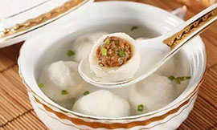
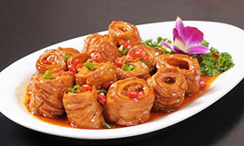

Similar to Jiangsu cuisine, but has less emphasis on seafood and more emphasis on herbs and vegetables. Braising and stewing are common cooking techniques.
Stinky Mandarin Fish
Fried Hairy Tofu
Cantonese cuisine incorporates almost all edible meats, including chicken feet, duck's tongue, snakes and snails. Spices are used moderately, and fresh herbs are rarely added to the food.
White Cut Chicken
Canto Roasted Goose
Fujian cuisine is influenced by its coastal position and mountainous terrain, and ingredients such as woodland mushrooms, bamboo shoots, fish, shellfish and turtles are used regularly. Flavor are light.
Fujian Fish Balls
Boiled Sea Clam with Chicken Soup
Hunan food is renowned for being hot and spicy, with garlic, chili peppers and shallots used liberally. Its spiciness are known to be purely hot.
Red Brasied Pork
Steamed Fish Head with Chopped Chili
The food in Jiangsu cuisine is known as being soft, but not to the point of falling apart: the meat tastes tender but wouldn't separate from the bone when picked up.
Sweet and Sour Fish

Nanjing Salted Duck
Shandong cuisine consists of two predominant styles: Jiaodong, characterized by light seafood dishes; and Jinan, a style that features the use of soup in its dishes.
Braised Intestines in Brown Sauce
Sweet and Sour Fish
Szechuan cuisine is renowned for its use of bold flavors; chili, garlic and Szechuan pepper are used liberally throughout the dishes. The pepper is known for causing a numbling senation in the mouth, creating a unique sense of spicy.
Kung Pao Chicken
Zhejiang food is fresh and light rather than greasy. It consists of at least 4 styles of cooking.
Dongo Pork

Braised Bamboo Shoot